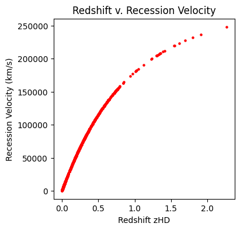
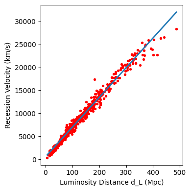
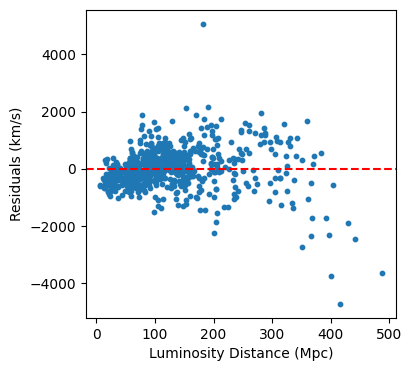
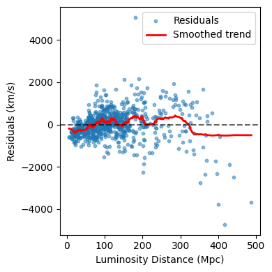
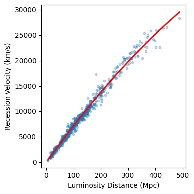

import pandas as pd
import numpy as np
import matplotlib.pyplot as plt
import seaborn as sns
from sklearn.decomposition import PCA
from sklearn.impute import SimpleImputer
from sklearn.preprocessing import StandardScaler
from sklearn.model_selection import train_test_split
from sklearn.preprocessing import PolynomialFeatures
from sklearn.metrics import mean_absolute_error, mean_squared_error, r2_score, calinski_harabasz_score
from sklearn.linear_model import RidgeCV, LassoCV, LinearRegression
from sklearn.ensemble import RandomForestRegressor
from sklearn.cluster import KMeans, DBSCAN
from scipy.cluster.hierarchy import linkage, dendrogram
from sklearn.mixture import GaussianMixtureExploratory Data Analysis
A scatterplot of velocity vs distance shows a strong positive, nearly linear trend.
Residual spread increases slightly at larger distances, motivating further investigation.
df2 = pd.read_csv("/workspaces/final-project-karina-munoz/01 data/processed/clean_sn_data.csv")
df2.info()
df2.describe()<class 'pandas.core.frame.DataFrame'>
RangeIndex: 1701 entries, 0 to 1700
Data columns (total 9 columns):
# Column Non-Null Count Dtype
--- ------ -------------- -----
0 CID 1701 non-null object
1 RA 1701 non-null float64
2 DEC 1701 non-null float64
3 zHD 1701 non-null float64
4 zCMB 1701 non-null float64
5 MU_SH0ES 1701 non-null float64
6 MU_SH0ES_ERR_DIAG 1701 non-null float64
7 d_L_Mpc 1701 non-null float64
8 velocity_kms 1701 non-null float64
dtypes: float64(8), object(1)
memory usage: 119.7+ KB| RA | DEC | zHD | zCMB | MU_SH0ES | MU_SH0ES_ERR_DIAG | d_L_Mpc | velocity_kms | |
|---|---|---|---|---|---|---|---|---|
| count | 1701.000000 | 1701.000000 | 1701.000000 | 1701.000000 | 1701.000000 | 1701.000000 | 1701.000000 | 1701.000000 |
| mean | 157.247004 | 6.978712 | 0.221229 | 0.221090 | 38.336629 | 0.242601 | 1168.643290 | 52045.674742 |
| std | 117.146180 | 26.985496 | 0.249271 | 0.249337 | 3.374499 | 0.098390 | 1539.673802 | 48125.345691 |
| min | 0.895900 | -80.177600 | 0.001220 | 0.001220 | 28.998700 | 0.114803 | 6.305797 | 365.523135 |
| 25% | 40.916900 | -4.967300 | 0.027730 | 0.027210 | 35.289200 | 0.180815 | 114.245736 | 8198.012300 |
| 50% | 150.305000 | 0.429400 | 0.163750 | 0.163570 | 39.329300 | 0.218994 | 734.277127 | 45117.396662 |
| 75% | 243.224000 | 23.352800 | 0.328680 | 0.328590 | 41.077800 | 0.279961 | 1642.706592 | 82974.884729 |
| max | 359.884000 | 84.678300 | 2.261370 | 2.261300 | 46.182800 | 1.517470 | 17240.902664 | 248266.005599 |
df2['velocity_kms'].describe() #checking for off values such as negative distance or velocity
df2['d_L_Mpc'].describe()
df2['zHD'].describe()count 1701.000000
mean 0.221229
std 0.249271
min 0.001220
25% 0.027730
50% 0.163750
75% 0.328680
max 2.261370
Name: zHD, dtype: float64luminosity_distance = df2['d_L_Mpc']
velocity = df2["velocity_kms"]
plt.figure(figsize=(4,4))
plt.scatter(df2["zHD"], df2["velocity_kms"], s=5, c = "red")
plt.xlabel("Redshift zHD")
plt.ylabel("Recession Velocity (km/s)")
plt.title("Redshift v. Recession Velocity")
plt.savefig("Redshift_vs_Velocity.jpg")
plt.show()
#proof that a linear regression line is possible at low z, howevernotthe. whole data set. 
#filtering low-z subset
df_low_z = df2[df2['zHD'] < 0.1]
print(len(df_low_z)) #checking to make sure there are enough data points remaining for regression
x = df_low_z["d_L_Mpc"].values.reshape(-1, 1)
y = df_low_z["velocity_kms"].values
model = LinearRegression() #blank regression model that hasn't been trained
model.fit(x, y)
H0_estimate = model.coef_[0]
intercept = model.intercept_
print(H0_estimate)
print(intercept)
x_line = np.linspace(x.min(), x.max(), 200).reshape(-1,1)
y_line = model.predict(x_line)
plt.figure(figsize=(4, 4))
plt.scatter(df_low_z["d_L_Mpc"], df_low_z["velocity_kms"], s=8, c="red")
plt.plot(x_line, y_line, linewidth=2, label="Linear fit", )
plt.xlabel("Luminosity Distance d_L (Mpc)")
plt.ylabel("Recession Velocity (km/s)")
plt.tight_layout()
plt.show()741
64.63371646290183
539.3106730436666
In the local universe (z < 0.1), the expansion is well-approximated by a linear relationship between recession velocity and distance Most of the scatter comes from: * peculiar velocities (galaxies moving within clusters) * measurement uncertainties in SN magnitudes * calibration noise
# Compute predictions
y_pred = model.predict(x)
# Residuals
residuals = y - y_pred
plt.figure(figsize=(4,4))
plt.scatter(df_low_z["d_L_Mpc"], residuals, s=10)
plt.axhline(0, color='red', linestyle='--')
plt.xlabel("Luminosity Distance (Mpc)")
plt.ylabel("Residuals (km/s)")
plt.show()
import numpy as np
import matplotlib.pyplot as plt
sorted_idx = np.argsort(df_low_z["d_L_Mpc"].values)
x_sorted = df_low_z["d_L_Mpc"].values[sorted_idx]
res_sorted = residuals[sorted_idx]
window = 50
kernel = np.ones(window) / window
smooth = np.convolve(res_sorted, kernel, mode='same')
plt.figure(figsize=(4,4))
plt.scatter(df_low_z["d_L_Mpc"], residuals, s=10, alpha=0.5, label="Residuals")
plt.plot(x_sorted, smooth, color='red', linewidth=2, label="Smoothed trend")
plt.axhline(0, color='black', linestyle='--', alpha=0.6)
plt.xlabel("Luminosity Distance (Mpc)")
plt.ylabel("Residuals (km/s)")
plt.legend()
plt.tight_layout()
plt.savefig("Smoothing_trend.jpg")
plt.show()

The smoothing of residuals, depicted after performing LOWESS-style smoothing, shows a negative curvature at higher Luminosity Distances, which underestimates the nonlinearity even when z < 0.1. At small luminosity distances, residuals scatter symmetrically around zero, but at larger distances, the LOWESS curve bends downward.
df_low_z = df2[df2["zHD"] < 0.1].copy()
df_low_z["d_L_Mpc_sq"] = df_low_z["d_L_Mpc"]**2
x_quad = df_low_z[["d_L_Mpc", "d_L_Mpc_sq"]].values
y_quad = df_low_z["velocity_kms"].values
quad_model = LinearRegression()
quad_model.fit(x_quad, y_quad)
coef_linear = quad_model.coef_[0] # coefficient on distance
coef_quad = quad_model.coef_[1] # coefficient on distance^2
intercept = quad_model.intercept_
dist_sort = np.sort(df_low_z["d_L_Mpc"].values)
quad_curve = (intercept + coef_linear*dist_sort + coef_quad*dist_sort**2)
plt.figure(figsize=(4,4))
plt.scatter(df_low_z["d_L_Mpc"], df_low_z["velocity_kms"], s=10, alpha=0.3, label="Data")
plt.plot(dist_sort, quad_curve, color='red', linewidth=2, label="Quadratic fit")
plt.xlabel("Luminosity Distance (Mpc)")
plt.ylabel("Recession Velocity (km/s)")
plt.tight_layout()
plt.show()
y_true = df_low_z["velocity_kms"].values
y_pred_linear = model.predict(df_low_z["d_L_Mpc"].values.reshape(-1, 1))
# --- Quadratic model predictions ---
d = df_low_z["d_L_Mpc"].values
y_pred_quad = intercept + coef_linear*d + coef_quad*(d**2)
# --- Metrics ---
def print_metrics(name, y_true, y_pred):
print(f"\n{name} Model Metrics:")
print("R²:", r2_score(y_true, y_pred))
print("RMSE:", np.sqrt(mean_squared_error(y_true, y_pred)))
print("MAE:", mean_absolute_error(y_true, y_pred))
print_metrics("Linear", y_true, y_pred_linear)
print_metrics("Quadratic", y_true, y_pred_quad)
Linear Model Metrics:
R²: 0.98294583385191
RMSE: 711.3833741980011
MAE: 492.4525817831241
Quadratic Model Metrics:
R²: 0.9857366607196344
RMSE: 650.5775499014312
MAE: 448.0372081395715